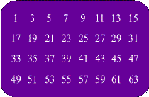
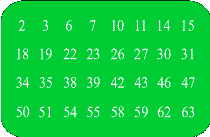

Magic Card
Instructions
Think of a number between 1 and 63. Look at the six cards below and check the box for every card that has your number. Click calculate number to see some magic!




Reflection
I learned a lot while creating this game. To start, I learned and experimented with JavaScript for the first time. It's very similar to Java, so it wasn't completely new to me. I also learned how a game is structured with JavaScipt and how it gets tied into the main HTML file. One challenge I faced was understanding the logic behind the game. I've never played the Magic card game so I had to do research on how it worked and how I would code it. JavaScript is different from HTML and CSS because it controls the logic and how a webpage processes input.
JavaScript Code Walkthrough
This game is a recreation of the Magic Card game. The purpose of this game is to allow users to think of a secret number between 1 and 63 and select the cards where it appears. The user interacts with the page by clicking checkboxes underneath the cards and clicking the calculate button. The variables are used as references to the HTML checkbox elements, the output text container, and a total that is set to 0. The function for this game is called calculateNumber and it stores all the logic. Inside of the function are if statements that check the state of each checkbox. If a card is checked, the script adds to the running total by the card's unique value of 1, 2, 4, 8, 16, or 32. The event listener connects the function to the button's click action, which makes the program get the input. Lastly, the program calculates the total and displays it on the page.